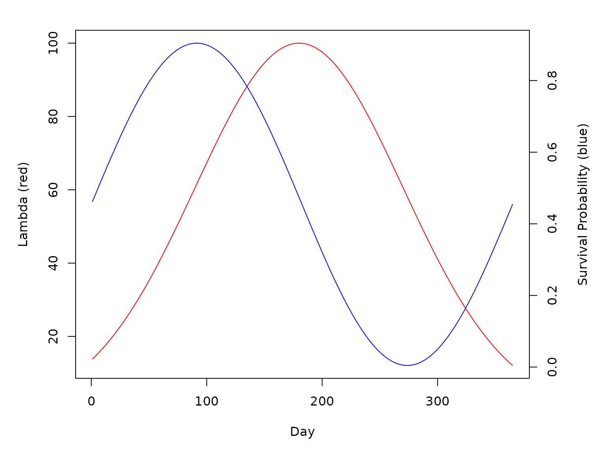

One of the mainstays of mosquito-borne pathogen transmission modeling is the Ross-Macdonald (RM) model and its various elaborations. The various models referred to as the RM model are generically a set of mathematical models, in continuous or discrete time, which consider mosquitoes to take bloodmeals on hosts at some constant rate, experience a latent period between infection and infectiousness (the extrinsic incubation period, EIP), and experience a constant rate of mortality.
In MicroMoB we include a generalized RM model which can fill the interface for the mosquito component. The generalized RM model has both a stochastic and deterministic option for updating state over a time step, which is a daily step.
The model requires the following parameters:
-
a: the host blood feeding rate -
p: daily survival probability (may be time-varying) -
EIP: duration of incubation period (may be time-varying,EIP[t]gives the number of days mosquitoes infected on daytmust wait before becoming infectious) -
psi: dispersal matrix describing movement between places
The state of the model is stored in vectors of length p (number of places/patches):
-
M: total mosquito density -
Y: density of infected mosquitoes -
Z: density of infectious mosquitoes
Note that the number of uninfected mosquitoes is M - Y and the number of infected but not yet infectious (incubating) mosquitoes is Y - Z.
Deterministic model
The deterministic model has the following form:
\[\begin{equation} Y_{0} = a \kappa_{t} (M_{t} - Y_{t}) \\ M_{t+1} = (pM_{t}) \cdot \psi +\lambda_{t} \\ Y_{t+1} = p(Y_{t} + Y_{0}) \cdot \psi \\ Z_{t+1} = (pZ_{t} \cdot \psi) + (a \kappa_{t-EIP} (M_{t-EIP} - Y_{t-EIP}) p^{EIP} \cdot \psi^{EIP}) \end{equation}\]
With the minor difference that in the code, the EIP is forward-looking rather than backwards. We also note that \(p\) is allowed to be time-varying, even though here we have represented it as a constant. \(\kappa\) is passed to the mosquito component every day as a parameter, and is the net infectiousness of all hosts to mosquitoes (the probability a mosquito would become infected after biting a random blood host).
\(\lambda_{t}\) is the number of newly emerging adults on that day. It is calculated in the aquatic (immature) component and passed to the mosquito component as a parameter.
Stochastic model
The stochastic model is as the deterministic one but all survival probabilities are used in binomial draws (or hypergeometric draws for nested sampling), and \(\psi\) parameterizes a multinomial draw over destination places/patches for mosquitoes leaving their home place. The stochastic model has been designed with care and appropriately tested to make sure that it does not draw inconsistent event histories for mosquitoes (e.g. sampling survival twice for mosquitoes in the same compartment).
Example
Let’s do an example. We’ll need to set up both the aquatic and mosquito components. The example will run for three years. We will make \(\lambda\) a vector giving emergence for each patch, for each day of the year, peaking in the middle of the year with 100 mosquitoes emerging per day, per patch.
We also assume that daily survival p is sinsuoidal, with a period of 365 days.
We let the EIP be a constant 5 days. We will also set \(\kappa = 0.05\) for each day.
tmax <- 365 * 3
p <- 3
lambda <- dnorm(x = 1:365, mean = 180, sd = 90)
lambda <- lambda * (100/max(lambda))
lambda <- t(replicate(p, lambda))
psurv <- (sin((1:365)/365*2*pi) + 1.01)/2 * 0.9
EIP <- 5
f <- 0.3
q <- 1
psi <- matrix(
c(
0.9, 0.05, 0.05,
0.05, 0.9, 0.05,
0.05, 0.05, 0.9
), nrow = 3, ncol = 3,
byrow = TRUE
)
par(mar = c(5,5,2,5))
plot(lambda[1, ], type = "l", col = "red", xlab = "Day", ylab = "Lambda (red)")
par(new = TRUE)
plot(psurv, type = "l", axes = F, xlab = NA, ylab = NA, col = "blue")
axis(side = 4)
mtext(side = 4, line = 3, 'Survival Probability (blue)')
Deterministic simulation
Now we can set up the models. Let’s first do a deterministic simulation. We use setup_mosquito_RM to setup the RM mosquito model for the mosquito component, and setup_aqua_trace to set up the aquatic (immature) component as a simple trace (forced) model.
M <- c(100, 100, 100)
Y <- c(0, 0, 0)
Z <- c(0, 0, 0)
mod <- make_MicroMoB(tmax = tmax, p = 3)
setup_mosquito_RM(mod, stochastic = FALSE, f = f, q = q, eip = EIP, p = psurv, psi = psi, M = M, Y = Y, Z = Z)
setup_aqua_trace(model = mod, lambda = lambda, stochastic = FALSE)
M_det <- matrix(data = 0, nrow = tmax, ncol = 3)
Y_det <- matrix(data = 0, nrow = tmax, ncol = 3)
Z_det <- matrix(data = 0, nrow = tmax, ncol = 3)
# run it
while(mod$global$tnow <= tmax) {
mod$mosquito$kappa <- rep(0.05, 3)
step_aqua(model = mod)
step_mosquitoes(model = mod)
M_det[mod$global$tnow, ] <- mod$mosquito$M
Y_det[mod$global$tnow, ] <- mod$mosquito$Y
Z_det[mod$global$tnow, ] <- mod$mosquito$Z
mod$global$tnow <- mod$global$tnow + 1L
}
det_out <- as.data.table(rbind(M_det, Y_det, Z_det))
det_out[, "Day" := as.integer(rep(1:tmax, 3))]
det_out[, "Compartment" := rep(c("M", "Y", "Z"), times = rep(tmax, 3))]
det_out <- melt(det_out, id.vars = c("Day", "Compartment"), variable.name = "Patch", value.name = "Count")
det_out[, "Patch" := as.integer(Patch)]
ggplot(det_out) +
geom_line(aes(x = Day, y = Count, color = Compartment)) +
facet_grid(Patch ~ .)Stochastic simulation
Now we run 10 stochastic simulations, using the same parameters.
sto_out <- mclapply(X = 1:10, FUN = function(runid) {
mod <- make_MicroMoB(tmax = tmax, p = 3)
setup_mosquito_RM(mod, stochastic = TRUE, f = f, q = q, eip = EIP, p = psurv, psi = psi, M = M, Y = Y, Z = Z)
setup_aqua_trace(model = mod, lambda = lambda, stochastic = TRUE)
M_out <- as.data.frame(matrix(data = 0, nrow = tmax, ncol = 3))
Y_out <- as.data.frame(matrix(data = 0, nrow = tmax, ncol = 3))
Z_out <- as.data.frame(matrix(data = 0, nrow = tmax, ncol = 3))
# run it
while(mod$global$tnow <= tmax) {
mod$mosquito$kappa <- rep(0.05, 3)
step_aqua(model = mod)
step_mosquitoes(model = mod)
M_out[mod$global$tnow, ] <- mod$mosquito$M
Y_out[mod$global$tnow, ] <- mod$mosquito$Y
Z_out[mod$global$tnow, ] <- mod$mosquito$Z
mod$global$tnow <- mod$global$tnow + 1L
}
out <- as.data.table(rbind(M_out, Y_out, Z_out))
out[, "Day" := as.integer(rep(1:tmax, 3))]
out[, "Compartment" := rep(c("M", "Y", "Z"), times = rep(tmax, 3))]
out <- melt(out, id.vars = c("Day", "Compartment"), variable.name = "Patch", value.name = "Count")
out[, "Patch" := as.integer(Patch)]
out[, "Run" := as.integer(runid)]
return(out)
})
sto_out <- do.call(rbind, sto_out)
ggplot(sto_out) +
geom_line(aes(x = Day, y = Count, color = Compartment, group = interaction(Run, Compartment)), alpha = 0.35) +
facet_grid(Patch ~ .)